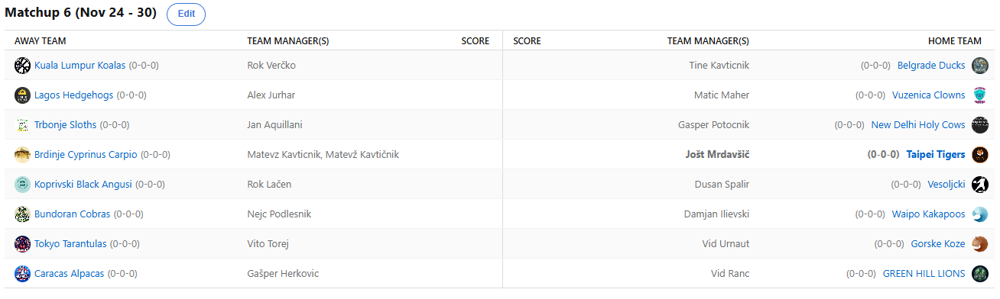

SEZONA 25/26
- Pravila in sistem tekmovanja
- Matchup1 (Oct 21 - Oct 26)
- Matchup2 (Oct 27 - Nov 2)
- Matchup3 (Nov 3 - Nov 9)
- Matchup4 (Nov 10 - Nov 16)
- Matchup5 (Nov 17 - Nov 23)
- Matchup6 (Nov 24 - Nov 30)
- Matchup7 (Dec 1 - Dec 7)
- Matchup8 (Dec 8 - Dec 14)
- Matchup9 (Dec 15 - Dec 21)
- Matchup10 (Dec 22 - Jan 28)
- Matchup11 (Dec 29 - Jan 4)
- Matchup12 (Jan 5 - Jan 11)
- Matchup13 (Jan 12 - Jan 18)
- Matchup14 (Jan 19 - Jan 25)
- Matchup15 (Jan 26 - Feb 1)
- Play-in (Feb 2 - Feb 22)
- Playoff 1 (Feb 23 - Mar 8)
- Playoff 2 (Mar 9 - Mar 22)
- Playoff 3 (Mar 23 - Apr 5)
2025/26 - Fantasy Koroška - sezona 9
MATCHUP 6 (Nov 24 - Nov 30)
Recap: MATCHUP 6
Thanksgiving week je za nami in že vstopamo v pravljični sedmi teden.
Nič kaj pravljičen ni začetek našega Matona. 6 tednov in prav toliko porazov za nekdanjo prvo gofljo Brdinj. Vse to je zdaj le še oddaljen spomin,
Matevž pa je bil ta teden tako zmeden, da je celo pozabil na svoje celebratione in proti Temu Timberwolvesom Koroške lige
ni proslavil svoje trice v stilu. Za razliko od svojega tokratnega nasprotnika pa poškodbe ne zaustavijo Joleta, ki je kljub
povprečnemu roster sizu 11 igralcev vseeno nekako na scoru 3-3 in že se tresejo naprotniki, ki ga bodo morali srečati popolnoma zdravega.
Še ena polomija v režiji Gepsa. Ponosni začasni lastnik Cama Whitmora, ki je kakopak bil najvišji ponudnik tik pred njegovim senzacionalnim 0-0-0 scorelinom
je ponovno ostal praznih rok. Še šesti poraz in G€P$ je danes že najavil, da gre v nakup gajbe. Quitters never win, winners never
quit pravijo, Gašper. Kako samo idejo Trbonjski Slothsi, v zelo kratkem času od 3x zapored največjega avspuharja pa do top scora
tedna. 2. zaporedna zmaga in Kups ne samo, da se oddaljuje od gajba mest, celo prebija se počasi a sigurno proti sredini lestvice.
Nikoli nismo dvomili tbh.
V izvrstni formi je tudi Lačenovski. Poleg zavidljivih 4 zmag zapored pa se lahko Voka pohvali tudi z novim osebnim rekordom - 39-minutno zamudo na malico.
Morda je svoj preizkušen recept neopranega dresa predal tudi svojim varovancem, ljudje se ti baje kar umikajo? Nevarno drsi po lestvici
navzdol proti mestom za gajbo naša starešina – Dule. Kar 5 zaporednih porazov za Dušana in če reeeees želi biti optimističen – »vrnil« se je
Embiid. V tekmi dveh podaljškov brutalnih 24FPTS 8) Korak v pravo smer.
KKD-jevski obračun tedna je tokrat potekal med Koalami in Račkami. Boljše so bile prve in tako svojemu managerju priigrale kar 16 točk na predictionih.
Nihče razen Verčko namreč ni verjel v zmago na vročem gostovanju v Beogradu. Bo zavoljo tega poraza po Obradoviču odletel še drugi Beograjski
Strateg – Tine? No, kot obliž na rano pa se lahko Tinki Binki pohvali z izvrstno strelsko predstavo. So pa hejterji s tribun vseeno
vzklikali: »nemorš do 40 nub«. Čakamo na dvoboj z Andfit Dravogradom, morda jim bo tam dokazal nasprotno?
Še naprej pa po igrišču leti tudi kapetan Dravograda, Vito Torej. No Janis no problem in že 6. zaporedna zmaga. Vito še sploh ne pozna poraza in za razliko od
Vojnika tudi Urnaut ni imel za burek. Kje je potegnil predictione Zacha Edeyja in Scottija Barnesa ve le on, sta mu pa prinesla dodaten %
možnosti. Naj spomnimo, Vito si lasti tudi pravico podvojiti točke enega matchup predictiona v poljubnem tednu sezone. Urnaut pa kot
smo predvideli, po povratku z Japonske popolnoma izgubljen. Najboljši lovilec medvedkov iz igralnih avtomatov južno od Pliberka bo potreboval
nek nov navdih, da se ne, kot smo vajeni, izgubi v povprečju. Morda bi ga ponovno zanimal kak trade z Joletom? :P
Neporažen je na veliko žalost vseh še vedno tudi Cicko. Njegova koš razlika 1649 je velika kot Cho Gath in nič ne kaže, da bi se imel v planu zaustaviti.
Z Vitom sta šele prva, ki sta se uspela priključiti Joletu pri dosežku koš razlike 1000+ po 6. krogih sezone. Dobro se je sicer boril Ilja,
na trenutke je izgledalo, da lahko Nejcu prizadene prvi poraz v sezoni, ampak za vikend se je Shrimpom zmešalo in vendarle so na koncu
dokaj lagano vzeli še 6. zmago. Bo Cici ustavljen ta teden v velikem derbiju?
Nasproti mu bo namreč stala še ena presenetljivo nedotaknjena franšiza – Zelenobreški Levi. Le-ti so po lanskem katastrofalnem krstu v ligi letos storili precej
korakov naprej in so na izjemnem 3. mestu s popolnih 6-0. V edinem tesnem in napetem obračunu v tem tednu so padle Alpake. Veliki ljubitelj Ja Moranta
in Dangela Russla, Gašper Herkovič, pa ima vseen že na kontu 4 zmage in nikakor ni razloga za preplah v Karakasu. Za popoln teden
je Ranacu manjkala zgolj zmaga proti I-VENT Mariboru, ampak vemo katera liga mu je prioriteta in to se je pokazalo tudi tokrat.
Za konec nam je ostal le še obračun med Fredom in Maherjem. Če bi v prejšnjih letih lahko mirne vesti napovedali 300 razlike, pa je tokrat Maher vendarle ponudil
boljši odpor in izgubil samo za 100. Pohvalno Matic, počasi se daleč pride pravijo. Zakaj »Kivi«, kot v košarkarskih krogih kličejo tega
ostrostrelca, še ni prišel na kakšno tekmo Koroške lige, ve le on. Zdaj sledita dve njemu bolj domači in nadejamo se udeležbe. Fred, edini
Kassadin player, ki gre na lejnu 10 0 in potem ne zna pokerijat gejma, pa je s svojimi Corgiji prišel do 3. zmage. Če bi še včeraj prišel
do tretje zmage, bi zmagal tudi clash ampak oh well. Naslednji teden pa si družno želimo čim slabših predstav Corgijev.
Čakata nas dva derbija – vse oči bodo uprte v obračun neporaženih odbojkarjev, Cicka in Ranca, ko bo eden zabeležil prvi poraz (razn če bo izenačeno lol).
Še en derbi bo med Alpakami in Tarantelami, vrhovna avspuharja Kavt in Geps pa bosta prve zmage iskala pri Kakapojih in Koalah.
Če bo zdravje služilo, pa računamo tudi veliko gobcanja med Fredom in Joletom. Zanimivo bo, srečno vsem (Razen Fredo).
Ne pozabite predictionov.
Best memes